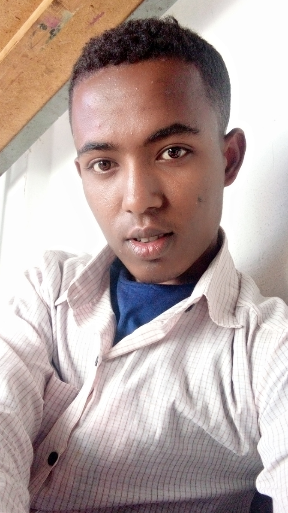

Introduction
My name is Birhanu Sewunet.I was born in around kiramoo,east wollega,on 21th of January 1993. I have 2 brothers and 2 sisters and i am the last child for my parent.Eventhough i was born in kiramoo,my parents had displaced from ther when I was a 1st year baby to Jiga ,west Gojjam, and I have been grown up and have laernd my primary school from 1st- 4th grade in Jiga.And I have accomplished my the next grade means 5-8 in fendeka(city of jawi wored). But eventually we have turnd back to Jiga city and I have finished my high school and preparatory acadamy in Jiga high school and preparatory school. I have passed my all grade with a good result specially in my entrance exam in 2011 E.C with 576/700 this lead me to join Addis Ababa university and got my dream to learn engineering.Now I have have learning the 2nd paused freshman course due to COVID-19 in EiABC campus.
.ABOUT ME HOME
]The second chapter of Moral and Ethical Education "Ethical theories"
The Ethics is the branch of philosophy that deals with the principles of morality and the well-defined standards of right and wrong that prescribe the human character and conduct in terms of obligations, rights, rules, benefit to society, fairness, etc. In other words, the ethics encompass the human rights and responsibilities, the way to lead a good life, the language of right and wrong, and a difference between good and bad. This means it is concerned with what is right or wrong for the individuals and society. The term “ethics” have been derived from the Greek word “ethos” which means character, habit, disposition or custom. Several philosophers have propounded different types of ethical theories which are listed below:
- CONSEQUENTIAL ETHICS In Consequential Ethics, the outcomes determine the morality of the act. What make the act wrong are the consequences. It says, it will be legitimate to lie in order to get out of a serious problem, such as to save a persons life. In other words a white lie is fine. So the essence of morality is determined by the result or outcome of the act. Teleological Ethical Theories
- NON – CONSEQUENTIAL ETHICS In non-Consequential Ethics, the source of morality comes from something else: law, God’s law, moral law, sense of duty, and your definition of what is the virtuous thing to do. All those considerations are built into the act itself before you could think of consequences, before it makes it right or wrong. One classic example is this system is lying. Lying could be wrong because in one system, it’s a violation of the nature of speech. It’s wrong to use a lie to achieve a good end. Simply put, a lie is a lie, is a lie. Deontological Ethical Theories